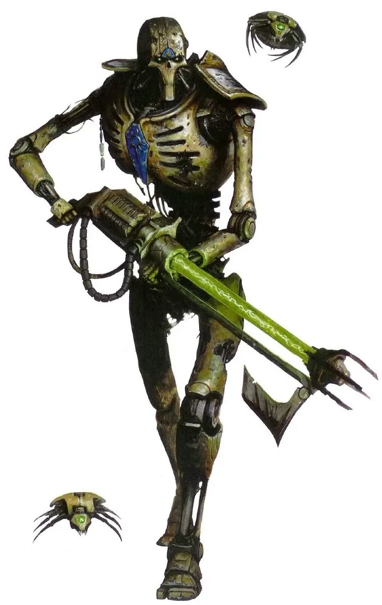
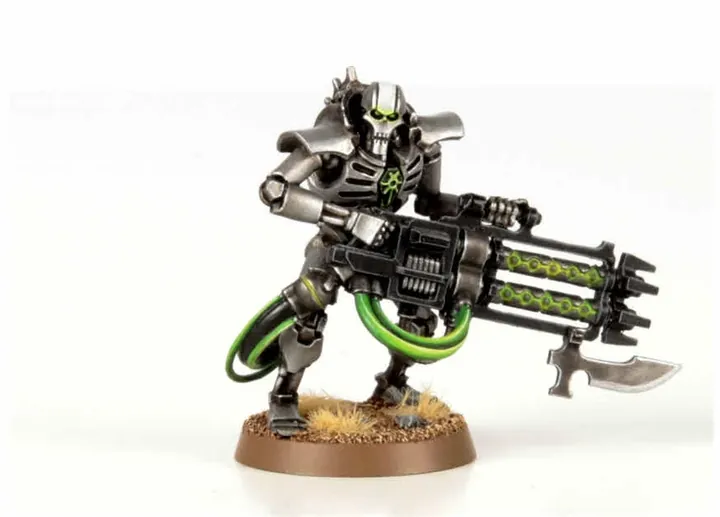
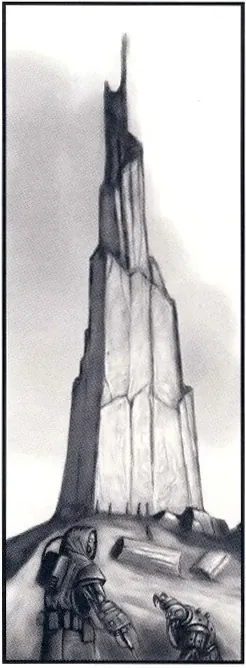
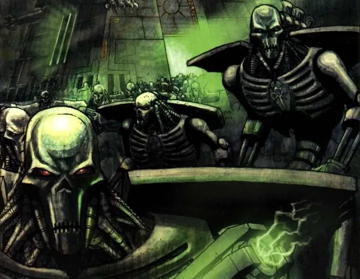
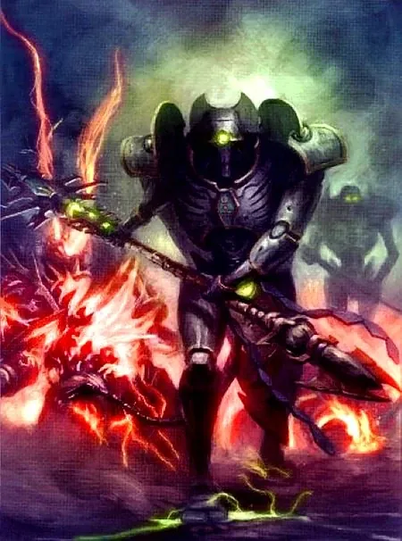
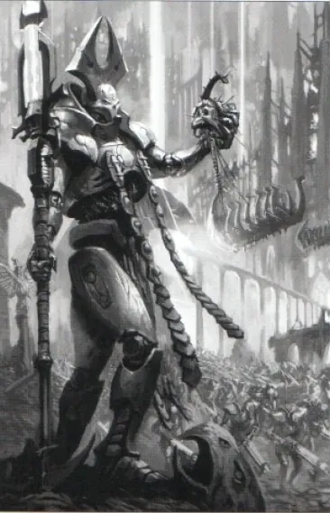
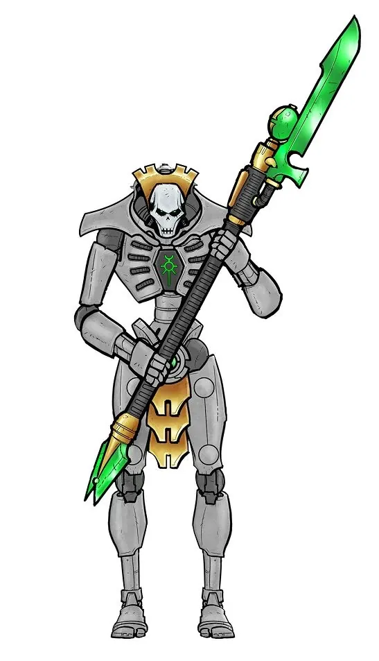
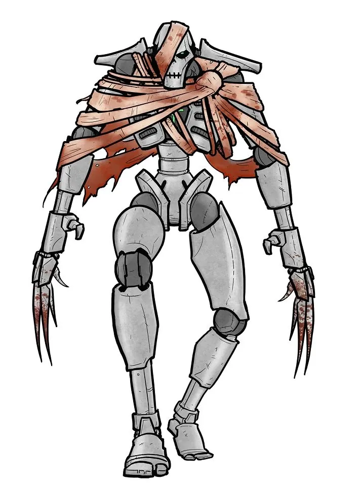
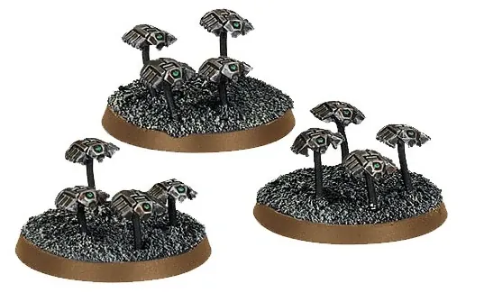
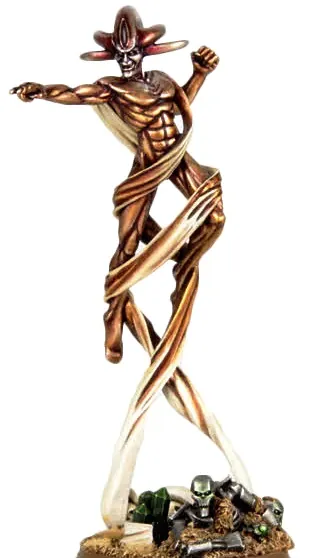

01ภาพรวม

อาณาจักรที่หลับใหลมา 60 ล้านปี ตื่นขึ้นมาทวงคืนกาแล็กซีที่เคยเป็นของตัวเอง
02ต้นกำเนิด
บรรพบุรุษคือ Necrontyr เผ่าที่มีชีวิตสั้นเพราะดาวฤกษ์ที่ร้อนแรง พวกเขาอิจฉา Old Ones ที่มีชีวิตยืนยาวจึงเริ่ม War in Heaven แล้วพบเทพพลังงาน C'tan ที่เสนอความเป็นอมตะ
Silent King Szarekh ยอมรับข้อเสนอ — ร่างกายของ Necrontyr ทั้งหมดถูกถ่ายโอนไปอยู่ในร่างโลหะ (Biotransference) แต่ C'tan ได้กินวิญญาณของพวกเขา หลังชนะ War in Heaven Necrons หันมาทำลาย C'tan ให้แตกเป็นชิ้น (Shards) แล้วเข้าสู่ Great Sleep
03เนื้อเรื่องเจาะลึก
Necrontyr — เผ่าที่ชีวิตสั้น
บรรพบุรุษของ Necrons อาศัยใกล้ดาวฤกษ์ที่ร้อนแรง ชีวิตสั้นและเต็มไปด้วยโรค พวกเขาเกลียด Old Ones ที่มีชีวิตยืนยาวแต่ไม่ยอมแบ่งความลับ จึงประกาศสงคราม War in Heaven
C'tan และ Biotransference
เผ่า Necrontyr พบ C'tan สิ่งมีชีวิตพลังงานที่กินดาวฤกษ์ C'tan เสนอร่างอมตะให้ Silent King ยอมรับ — ทั้งเผ่าถูกย้ายสู่ร่างโลหะ แต่ C'tan ดูดกินวิญญาณของพวกเขาไป Necrons กลายเป็นทาสของ C'tan จนภายหลังร่วมกันทำลาย C'tan แตกเป็นชิ้น (Shards)
The Great Sleep
หลังชนะ Old Ones Necrons รู้ว่ากาแล็กซีจะเต็มไปด้วยพลัง Warp จึงเข้าจำศีลใน Tomb World หลายล้านปี หลายดาวตื่นผิดพลาด ขุนนางบางคนเสียสติ บางราชวงศ์ถูกทำลายไปแล้ว — ในยุค 40K พวกเขาเริ่มตื่นพร้อมกันทั่วกาแล็กซี
04ยุค 30K — ในยุค Great Crusade และ Horus Heresy
ยุค 30K Necrons ส่วนใหญ่ยังหลับอยู่ใน Tomb World จักรวรรดิพบเจอพวกเขาเพียงไม่กี่ครั้ง (และมักถูกปิดเป็นความลับ) — ความจริงนี้ต่างจากยุค 40K ที่ Necrons ตื่นขึ้นทั่วกาแล็กซี
ดูภาพรวมยุค 30K ทั้งหมดที่ เนื้อเรื่องยุค 30K และความต่างของสองยุคที่ เปรียบเทียบ 30K vs 40K
05นิสัยและวัฒนธรรม
- ปกครองแบบราชวงศ์ (Dynasty) — ขุนนางยังมีความคิดของตัวเอง แต่ทหาร Necron Warrior แทบไม่มีจิตใจ
- ร่างที่เสียหายจะถูกส่งกลับ Tomb World เพื่อซ่อม (Reanimation Protocols)
- บางคนเสียสติเพราะหลับนานเกินไป
06จุดที่น่าสนใจ
- Imotekh the Stormlord: ผู้นำราชวงศ์ Sautekh นักวางแผนชั้นยอด
- Trazyn the Infinite: นักสะสมที่ขโมย 'ของโบราณ' ทั่วกาแล็กซี
07ความสามารถพิเศษ
สิ่งที่ทำให้ Necrons แตกต่างจากทัพอื่น — ทั้งพลังที่ติดตัวมาทั้งเผ่า/ทัพ และความสามารถของบุคคลสำคัญ
ของทั้งเผ่า/ทัพ

Reanimation Protocols — ฟื้นขึ้นมาใหม่
ร่างโลหะที่เสียหายจะซ่อมตัวเองกลางสนามรบและลุกขึ้นใหม่ หรือหายไปแบบเทเลพอร์ตกลับ Tomb World เพื่อซ่อม ศัตรูจึงไม่แน่ใจว่าฆ่า Necron ได้จริงหรือไม่

Necrodermis — โลหะมีชีวิต
ร่างและยานของ Necrons ทำจากโลหะที่ซ่อมตัวเองได้ รอยกระสุนค่อย ๆ ปิดเอง

ประตูมิติและการเทเลพอร์ต
เทคโนโลยีของ Necrons ล้ำหน้าจนเหมือนเวทมนตร์ — Monolith มีประตูมิติ (Eternity Gate) ส่งทหารจากดาวอื่นมาสู่สนามรบ, Veil of Darkness ทำให้ทั้งหน่วยหายตัวแล้วไปโผล่อีกที่ และ Dolmen Gate ประตูที่เจาะเข้าไปใน Webway ของ Aeldari ได้

ไร้วิญญาณ — ต้าน Warp
Necrons ไม่มีวิญญาณ จึงไม่เห็นใน Warp และปีศาจแทบทำอะไรไม่ได้ พวกเขาสร้างเสา Pylon ขนาดยักษ์ที่กดพลังของ Warp ได้ — เทคโนโลยีที่น่ากลัวที่สุดต่อ Chaos

ปืน Gauss ลอกเนื้อ
ปืน Gauss Flayer ลอกโมเลกุลของเป้าหมายทีละชั้น เจาะทะลุเกราะใดก็ได้ถ้าโดนนานพอ

ควบคุมดาวและเวลา
Cryptek ชั้นสูงควบคุมดาวฤกษ์ แรงโน้มถ่วง และบางคนเดินทางผ่านกาลเวลาได้ (Chronomancer)
ของบุคคลสำคัญ

Szarekh the Silent King
ผู้ปกครองสูงสุดผู้ทำให้เผ่า Necrontyr กลายเป็นเครื่องจักร แล้วเนรเทศตัวเองออกนอกกาแล็กซีหลายล้านปีด้วยความรู้สึกผิด กลับมาในยุคปัจจุบันเพื่อต่อสู้กับภัยของ Tyranids และ Chaos

Imotekh the Stormlord
Phaeron แห่ง Sautekhนักยุทธศาสตร์ที่เก่งที่สุด เรียกพายุฟ้าผ่ามาทำลายศัตรู และรวบรวมราชวงศ์ต่าง ๆ ใต้การนำของเขา

Trazyn the Infinite
นักสะสมผู้เป็นอมตะขโมย "ของสะสม" ทั่วกาแล็กซี รวมถึงคนและเหตุการณ์ เก็บในพิพิธภัณฑ์บนดาว Solemnace เมื่อร่างถูกทำลาย จิตของเขาจะย้ายไปอยู่ในร่างสำรองที่อยู่ใกล้ที่สุด

Orikan the Diviner
ผู้มองเห็นกาลเวลาCryptek สาย Chronomancer ผู้ทำนายดวงดาวได้แม่นยำและเดินทางย้อนเวลาเพื่อแก้เหตุการณ์ได้

Illuminor Szeras
นักวิทยาศาสตร์ผู้ออกแบบร่างโลหะCryptek ผู้คิดค้นกระบวนการ Biotransference และหมกมุ่นกับการศึกษาร่างกายของสิ่งมีชีวิต
08หน่วยและบทบาทในกองทัพ
Necrons คือเผ่าที่ย้ายวิญญาณไปอยู่ในร่างโลหะเมื่อ 60 ล้านปีก่อน สังคมยังคงแบ่งชนชั้นตามราชวงศ์ (Dynasty) — ชนชั้นสูงยังมีความคิด ส่วนทหารชั้นล่างเหลือแค่เครื่องจักรไร้จิตใจ

Overlord / Phaeron
โอเวอร์ลอร์ด / ฟาเอรอนผู้ปกครองดาวสุสาน (Tomb World) หรือราชวงศ์ เช่น Imotekh the Stormlord และ Szarekh the Silent King ผู้ปกครองสูงสุด
Cryptek
คริปเทค"ช่าง/นักวิทยาศาสตร์" ของ Necrons ควบคุมเทคโนโลยีที่เหมือนเวทมนตร์ แบ่งสาย เช่น Technomancer (ซ่อมร่าง — ทำหน้าที่เหมือนหมอ), Chronomancer (เวลา), Psychomancer (ความกลัว), Plasmancer (พลังงาน)
Technomancer
เทคโนแมนเซอร์Cryptek ผู้ซ่อมร่างโลหะของ Necrons ที่เสียหายให้ลุกขึ้นมาใหม่ (Reanimation Protocols) — ใกล้เคียง "หมอ" ที่สุด
Necron Warriors
เนครอนวอร์ริเออร์ทหารชั้นล่างไร้จิตใจจำนวนมหาศาล ยิงปืน Gauss ที่ลอกเนื้อเป็นชั้น ๆ
Immortals
อิมมอร์ทัลทหารชั้นดีที่ยังเหลือจิตสำนึกเล็กน้อย ทนทานกว่า Warriors

Lychguard
ไลช์การ์ดองครักษ์ของชนชั้นสูง ภักดีแม้ผ่านไปหลายล้านปี

Flayed Ones
เฟลย์ดวันNecrons ที่ติดคำสาปของ C'tan ชื่อ Llandu'gor ทำให้คลั่งถลกหนังศัตรูมาสวม

Canoptek
คาโนปเทคหุ่นยนต์ซ่อมบำรุงดาวสุสาน เช่น Scarab (ด้วง) และ Spyder (แมงมุม) ดูแลระหว่างการหลับใหลหลายล้านปี

C'tan Shard
เศษ C'tanชิ้นส่วนของเทพดวงดาว C'tan ที่ถูกแบ่งและกักขังไว้ใช้เป็นอาวุธ
09วีรกรรมและเหตุการณ์สำคัญ
War in Heaven
ต่อสู้กับ Old Ones
Tomb World ตื่น
อาณาจักรเริ่มฟื้นคืนทั่วกาแล็กซี
Silent King กลับมา
Szarekh รวมราชวงศ์ต่าง ๆ เพื่อเผชิญ Chaos และ Tyranids
10ตัวละครสำคัญ
Szarekh
Silent Kingผู้ปกครองสูงสุดที่กลับมา
Imotekh the Stormlord
Phaeron แห่ง Sautekhนักยุทธศาสตร์
11ยุค 40K — สหัสวรรษที่ 41
ยุค 40K Tomb World ทยอยตื่น Necrons โจมตีมนุษย์ที่ตั้งรกรากบนดาวของพวกเขา
12เนื้อเรื่องล่าสุด (Era Indomitus / M42)
Szarekh กลับมาจากการเนรเทศเพื่อรวมอาณาจักร เป้าหมายคือหาทางคืนร่างเนื้อหนังให้ชาวเผ่า ในขณะที่ความขัดแย้ง Pariah Nexus ยังเป็นภัยใหญ่ต่อจักรวรรดิ
หลังการเกิด Great Rift ปฏิทินของจักรวรรดิคลาดเคลื่อน เหตุการณ์ยุคปัจจุบันจึงมักระบุเพียง 'M42' ไม่มีปีที่แน่นอน
13แกลเลอรี